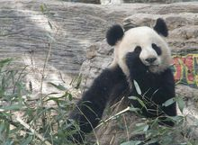

大熊猫体型肥硕似熊、丰腴富态，头圆尾短，头躯长1200～1800mm，尾长100～120mm。体重80～120kg，最重可达180kg，饲养的熊猫略重，一般雄性个体稍大于雌性。头部和身体毛色黑白相间分明，但黑非纯黑，白也不是纯白，而是黑中透褐，白中带黄。秦岭地区的个体偏大，体毛粗糙，腹毛略呈棕色色泽。岷山（尤以青川平武）则个体较小，体毛也较前者为细，腹毛棕色不明显，但凉山的个体并不偏小。
黑白相间的外表，有利于隐蔽在密林的树上和积雪的地面而不易被天敌发现。相对锋利的爪和发达有力的前后肢，有利于大熊猫能快速爬上高大的乔木。
大熊猫皮肤厚，最厚处可达10毫米。身体不同部分的皮肤厚度也不一样，体背部厚于腹侧，体外侧厚于体内侧，皮肤的平均厚度约为5毫米，并且色白而富有弹性和韧性。
大熊猫的视觉极不发达。这是由于大熊猫长期生活于密密的竹林里，光线很暗，障碍物又多，致使其目光变得十分短浅。此外由于它的瞳孔像猫一样是纵裂的。因此，当夜幕降临的傍晚，它们还能活动。